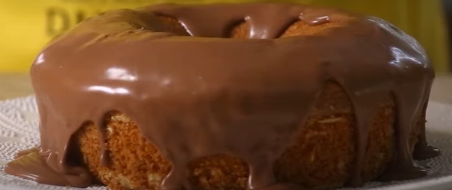

Bolo de Cenoura

Ingredientes
Massa
- 2 cenouras médias, cortadas em cubos 300 g
- 1/2 xícara de chá de óleo 125 ml
- 3 ovos
- 1/2 xícara de chá de Amido de Milho Maizena
- 1 1/2 xícara de chá de farinha de trigo 210 g
- 2 colheres de chá de fermento em pó 8 g
- 1 xícara de chá de açúcar 190 g
Cobertura
- 1/2 xícara de chocolate ao leite derretido
- 1/2 xícara de creme de leite
Modo de preparo
massa
- Pré-aqueça o forno em temperatura média (180°C).
- Unte e enfarinhe uma forma de furo central média (20 cm de diâmetro). Reserve.
- No copo do liquidificador, coloque a cenoura, o óleo e os ovos, e bata até a massa do bolo de cenoura ficar homogênea.
- Em uma tigela, peneire o amido de milho MAIZENA®, a farinha de trigo, o fermento e o açúcar, junte a mistura de cenoura reservada, e mexa com o auxílio de uma espátula até que vire uma massa uniforme.
- Disponha a massa na forma reservada e leve ao forno por 40 minutos, ou até que um palito, depois de espetado na massa, saia limpo. Retire o forno e deixe amornar.
cobertura de chocolate
- Faça a cobertura: misture o chocolate e o creme de leite, e espalhe por toda a superfície do bolo. Sirva a seguir.
Se preferir, utilize a forma redonda canelada (18 cm de diâmetro). Se não tiver liquidificador em casa, você pode fazer essa receita de bolo de cenoura usando cenoura ralada à mão e uma colher de pau para misturar os ingredientes. Lembre-se de peneirar a farinha e demais ingredientes em pó para não formar pelotas e conseguir um bolo de cenoura fofinho e areado. Regue o bolo ainda quente com a calda de chocolate, para que ela penetre bem dentro.
click nesse link para ver um video de preparo